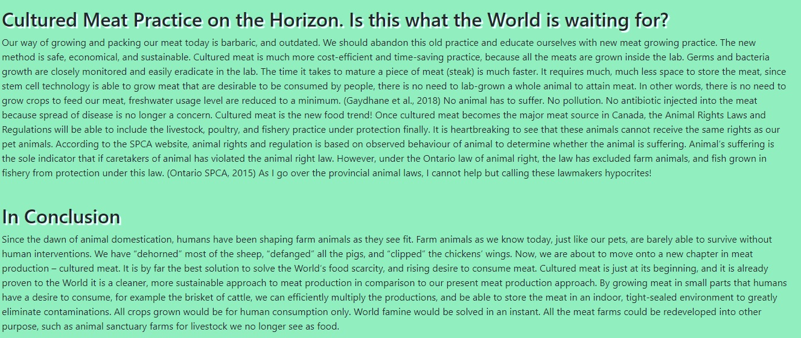
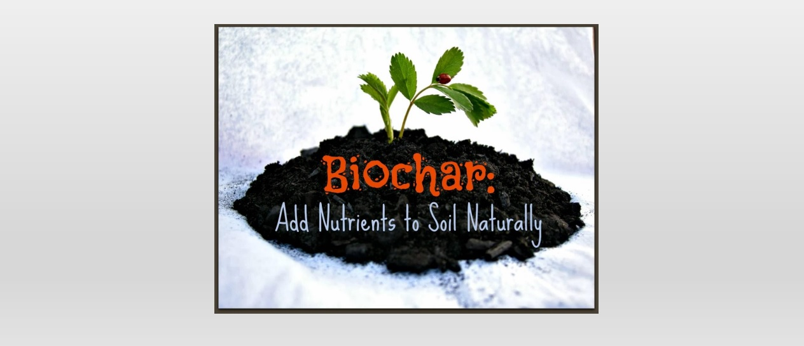
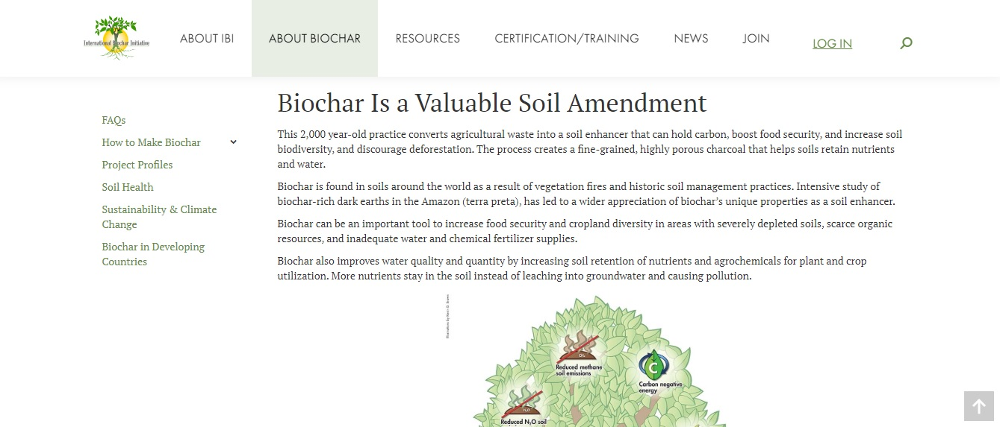

Cultured Meat
Global Warming
Biochar International
🌎🌎 Crazy Ideas to Save the World Quizlet 🌎🌎
What is Biochar?
A rediscovered solution for excess CO2 emissions. It is a “High carbon content, charcoal-like material that entraps carbon in the soil to eliminate the bonding of carbon with oxygen in the air to form CO2.
A highly combustible charcoal material for barbecue and amazing bonfire.
Black Gold 💰💰💰💰💰💰💰💰💰
Submit
What is Cultured Meat?
Pasteurized meat. AAA+ Food grade. Meat packaging has applied the use of cold compressors to let the aroma and the freshness of meat retained longer than average produced meat.
Vertical livestock farming technique. You know? Same idea as in vertical growing your veggies on your wall.
A.k.a. lab-grown meat. Meat is produced using stem-cell technology. A much sanitized, cost-efficient, sustainable practice of producing meat for us to eat.
Submit
Would you like to learn more about Biochar and Cultured meat????
Yes please. 😊
Yes. Yes. Yes. 😲😲😆😆
Of course!!!!! I am so excited that finally there are viable solutions to save the planet!!! 🌻🌻🌻🤩🤩🙌🙌🙌
Submit
You can learn more about Biochar and Cultured Meat here:
Cultured Meat
Global Warming
Biochar International